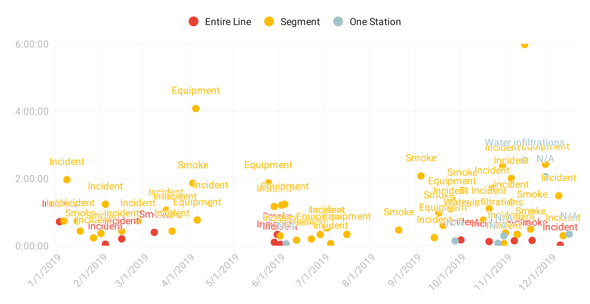

Using Twitter data to visualize service disruptions on the STM’s Orange Line
by Sam Mehenni
1. Introduction
Unplanned service disruptions are happening frequently on metro lines in Montreal. These disruptions can be minor, affecting a single station for a few minutes, or can paralyse an entire line, forcing commuters to find alternatives to reach their destination.
By looking at the Twitter feeds of the four STM metro lines, it is possible to view the history of service disruptions and analyze their impact on the network.
For this project, I scraped the service alerts of the Orange Line on
Twitter — 2386 tweets, going back to 1st January 2018 — in order to understand what are the main types of disruptions, their duration, and the sections of the metro line that were impacted.
A typical disruption starts with the first “Shutdown” tweet, and is considered resolved when a “Normal Service Métro” tweet related to that same disruption has been shared. The calculated duration is the timestamp difference between the two tweets.
2. Legend
2.1 Types of service disruptions
Equipment: train breakdown, computer system failure, electrical equipment failure
Incident: intervention of emergency services, injured or ill passenger, unauthorized person on the tracks, emergency brake activated
Smoke: presence of smoke in the station/tunnel
Water infiltration: infiltration requiring a power cut
N/A: unspecified
2.2 Impact on the line
Entire Line: line shut down between Côte-Vertu and Henri-Bourassa/Montmorency
Segment: shut down only on a segment, e.g. between Côte-Vertu and Lionel-Groulx
One Station: unplanned closing of one metro station
3. Charts
- Entire Line
- Segment
- One Station
- X axis: Date of the disruption
- Y axis: Duration of the disruption (HH:MM:SS)
- Mobile users: note that the interactive charts have been replaced by static images for compatibility reasons.
(F.1) 2018 — A scatter plot of all service disruptions
(F.2) 2019 — A scatter plot of all service disruptions
(F.3) 2018 & 2019 — Impact & duration per month

(F.4) Number of disruptions and their impact on the line
(sum for the year, by type)
2018

2019

(F.5) Total duration of disruptions and their impact on the line
(sum for the year, by type)
2018

2019

4. Findings
Looking at Figs. 1 and 2, it is possible to quickly see that in 2018, no service disruption impacted the Orange Line for more than two hours. However, in 2019, no less than five major disruptions forced the shutdown of a segment of the line for more than two hours — including the notorious water infiltration issue that caused the closing of the stations between Lionel-Groulx and Berri-UQAM for almost six hours on 14 November 2019.

On the Fig. 3, we can see that the monthly total of durations is decreasing in the summer period, and increasing during the fall. The months with the highest number of disruptions in the past two years are March 2018 (7), October 2019 (8) and November 2019 (8).
As regards to the types of disruptions, incidents — requiring the intervention of emergency services, or when an unauthorized person is on the tracks — represent the majority of the annual total. It is interesting to note that these incidents affected the entire Orange Line for 2h28 cumulatively in 2018, but only 1h01 in 2019. However, some segments of the line were clearly more impacted in 2019, for a cumulative total of 27h54, compared to 19h50 in 2018. Smoke-related disruptions — on the platform/in the tunnel — also increased for the study period, from 4h11 in 2018 to 9h17 in 2019.
5. Methodology & Tools
Data was scraped from the @stm_Orange Twitter handle, and includes the period from 1st January 2018 to 14th December 2019. It was done using Twint , a scraping tool that does not use Twitter’s API (no rate limitations). Graphs were created in Google Sheets.
6. Data
You can download a clean dataset with all the service disruptions here (CSV).